ESP32
First, I checked whether the board itself was working.
STUDIO: BY ANY MEDIA NECESSARY / PROCESS DOCUMENTATION
What happens in the small moment when a notification pulls our attention away?
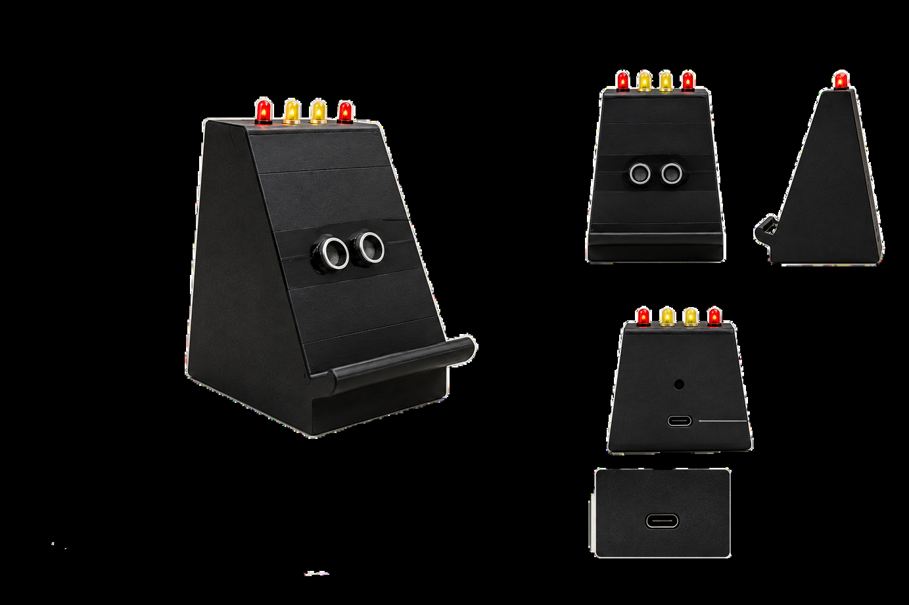
01 / THE QUESTION
The studio began with the Luddite Movement, Critical Making and Protocol. I kept returning to how technology changes the systems and habits already around us.
I moved from larger systems to something much closer to everyday life: my relationship with my phone.
“I am doing something. The phone gives me a notification. I notice it. My attention moves towards the phone.”
I was not trying to say that phones are bad or that people should stop using them. I wanted to understand the small everyday behaviour that happens when a notification pulls us away from what we were already doing.
LUDDITES → CRITICAL MAKING → PROTOCOL → NOTIFICATION → ATTENTION SHIFT
02 / FROM TECHNOLOGY TO ATTENTION
From changing systems to one tiny, familiar moment.
03 / TRY THE MOMENT
The physical artefact listens for a notification sound while the phone is on the stand. Here, the interaction is simplified for the web.
PHONE READY / WAITING
04 / MAKING THE THING
I started with almost no experience in electronics, coding or 3D printing. I tested one component at a time, then began combining them.
First, I checked whether the board itself was working.
I tested sound values through the serial monitor.
I added the lights and tested their response.
I tested whether the phone distance could be detected.
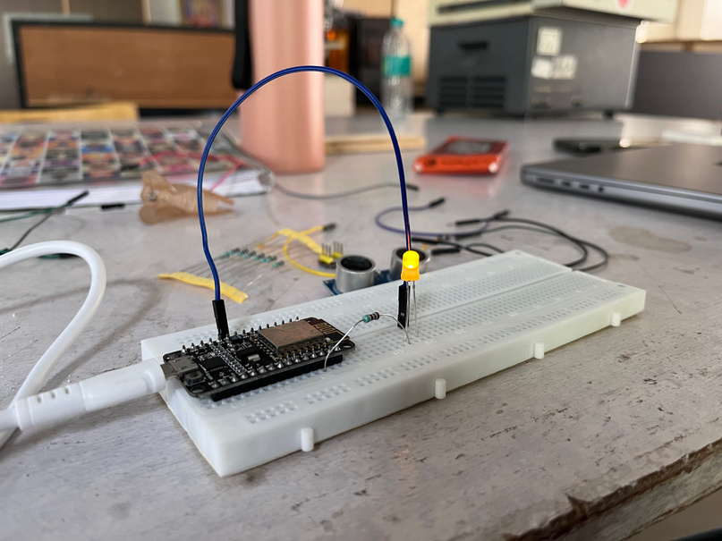
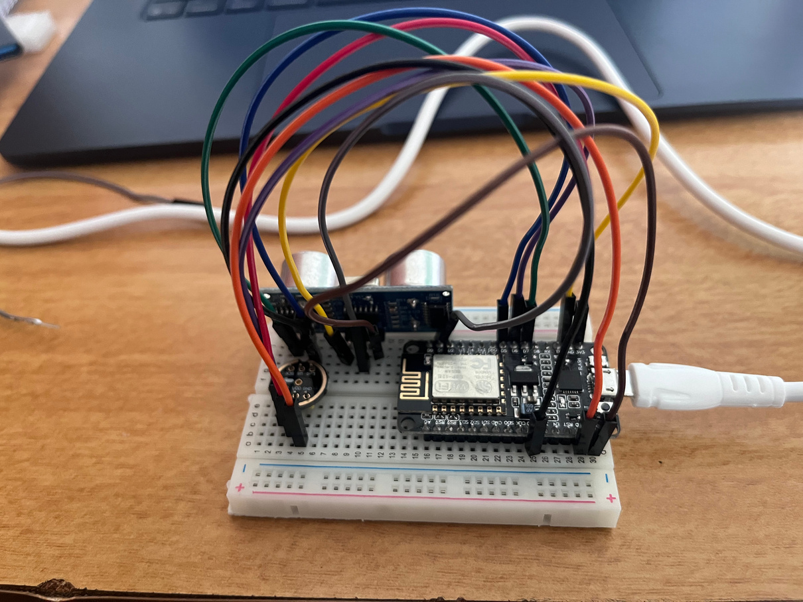
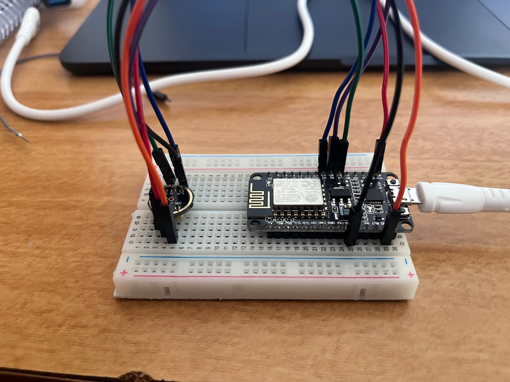
TESTING / SERIAL MONITOR
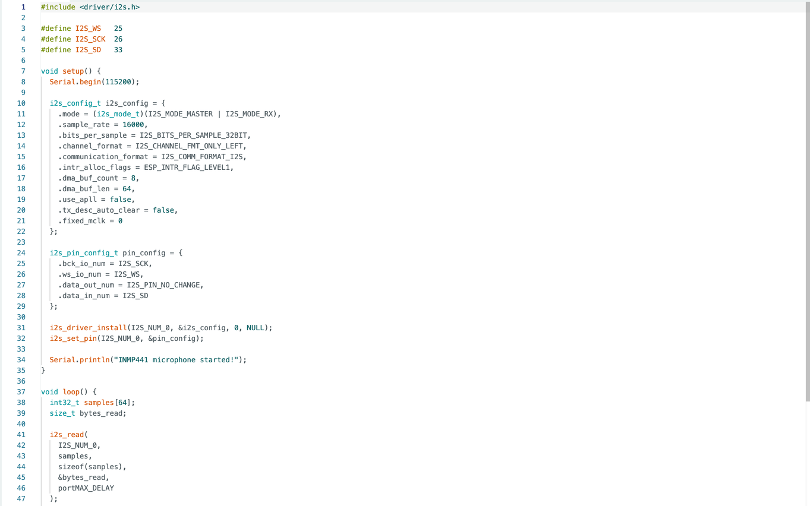
05 / FAILURE + ITERATION
A code that worked for one component did not always work when another was added. Sometimes a jumper wire was not working. Sometimes a connection was loose. Sometimes I needed another material.
I kept changing the code, uploading it, testing it and trying again because I wanted to see the experience I had imagined actually happen.
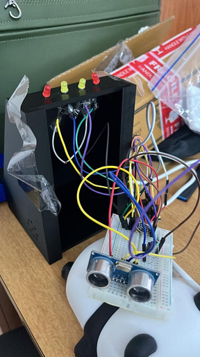
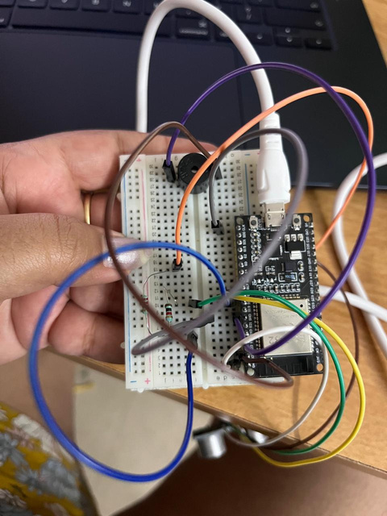
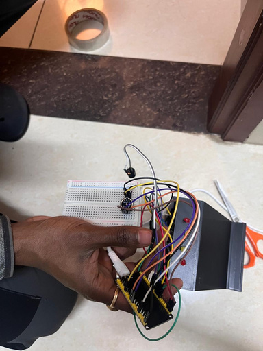
06 / FROM SKETCH TO OBJECT
I did not know how the phone stand would look in the beginning. Sketches, paper forms and the first print helped me understand what the object actually needed.
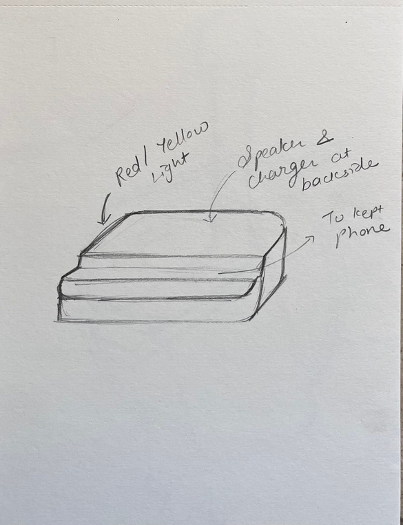
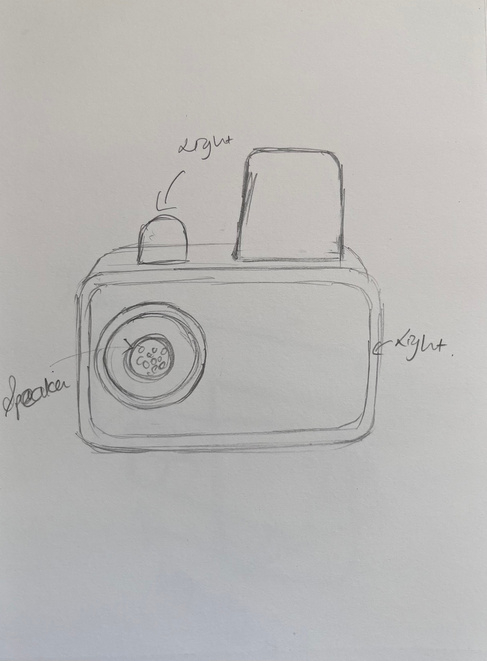
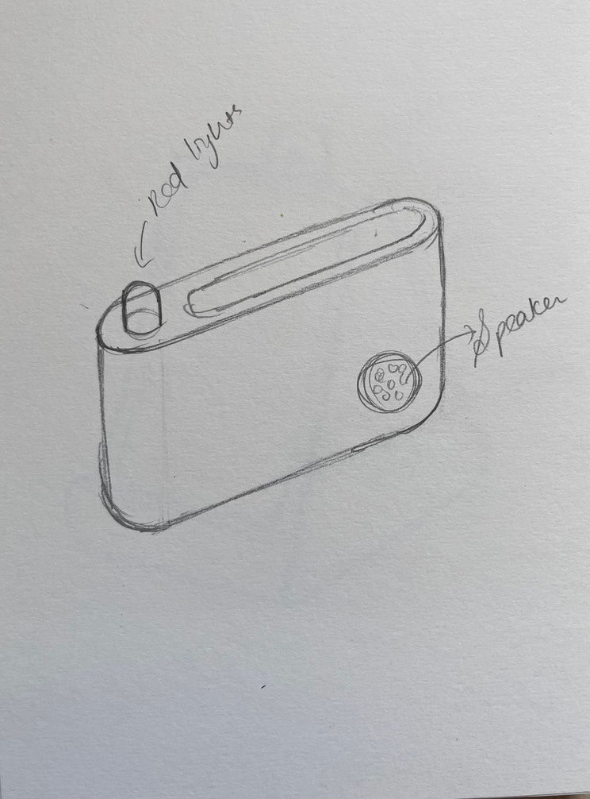
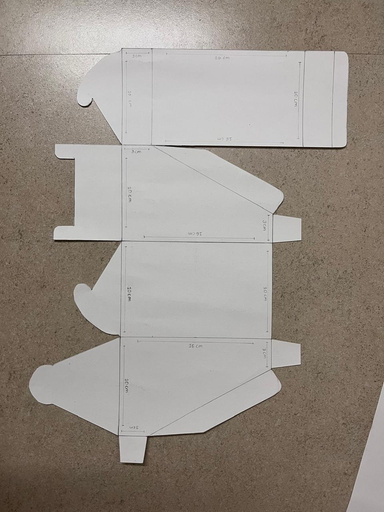
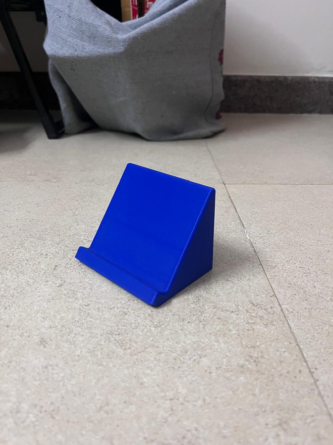
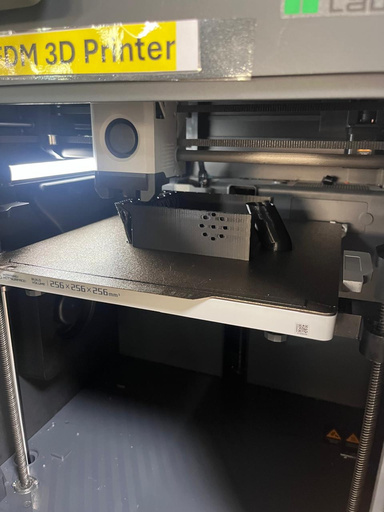
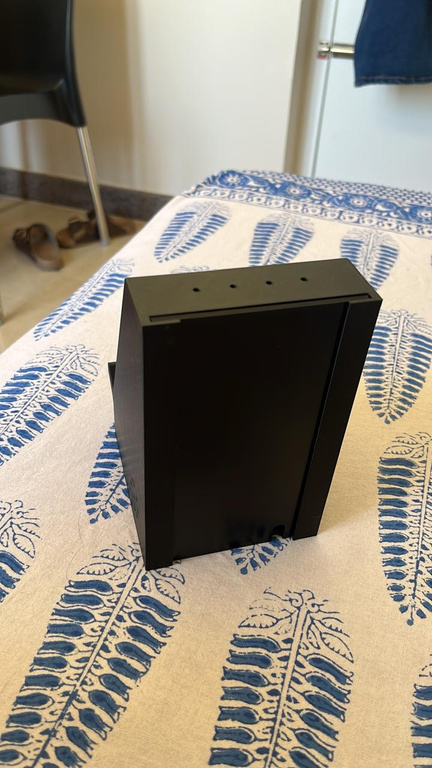
The first print made one thing obvious: the inside needed to be hollow to hold the electronics and wires. I divided the stand into a main body and a sliding back part so the electronics could stay inside and still be accessible.
07 / FIRST PROTOTYPE + FEEDBACK
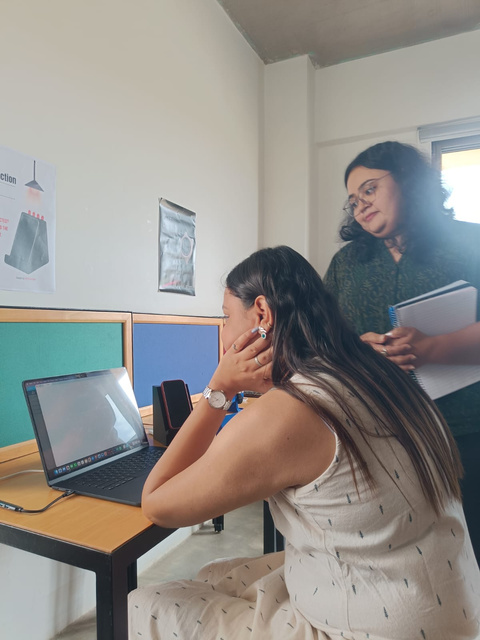
What is the prototype telling you?
Is this design intervention or artefact?
Why did you make this?
How are you showing distraction through the object?
Are you trying to make the moment of distraction more annoying?
I had thought of keeping the proximity sensor inside the stand. I found that it could not work properly when covered by the 3D-printed body, so I made an opening and placed it outside.
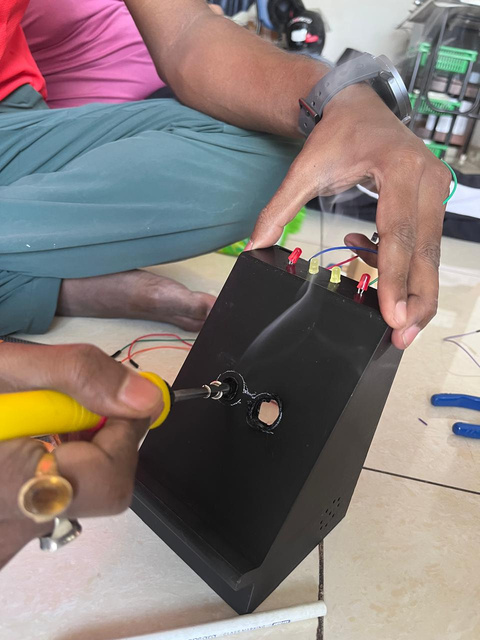
08 / HOW DISTRACTION HOOK WORKS
09 / FINAL ARTEFACT
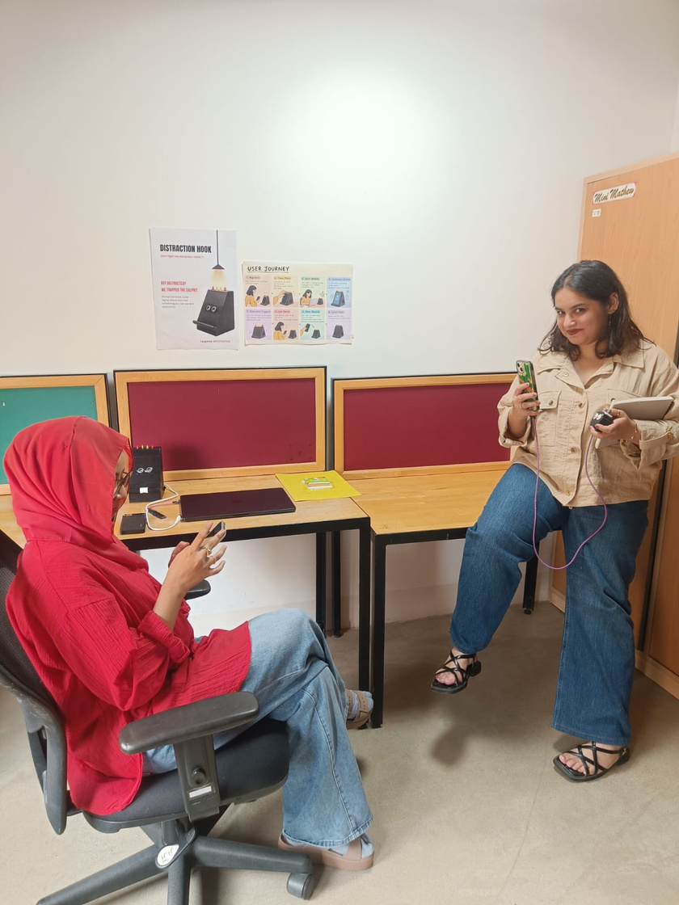
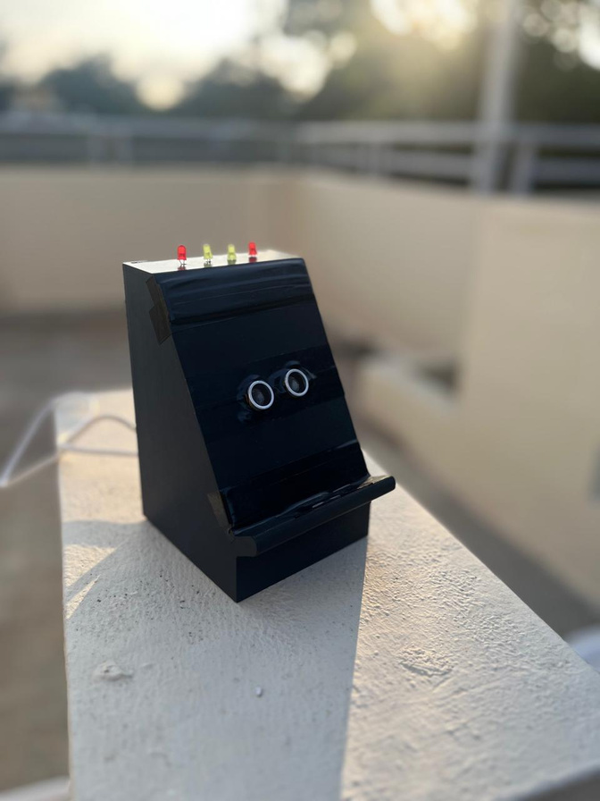
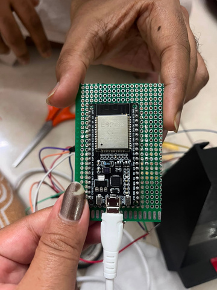
FINAL WORKING ARTEFACT
The documentation includes a video of the final working artefact.
WATCH ON VIMEO ↗10 / REFLECTION
“I do not have to know everything before I start.”
When I started this studio, I had never worked with electronics before. Wires, sensors and coding felt difficult and confusing.
I slowly learned to check what could be wrong and try again. I learned that I could learn electronics, coding and 3D printing while making the project, instead of knowing everything before I started.
The biggest thing I am taking from these seven weeks is the confidence that I can learn something that initially feels very new to me.